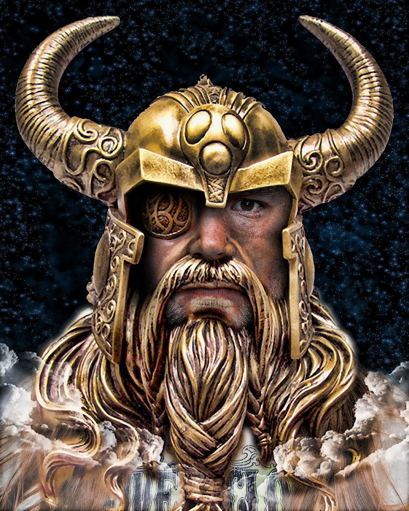
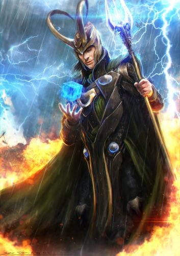
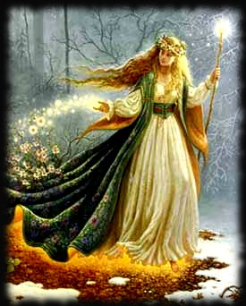
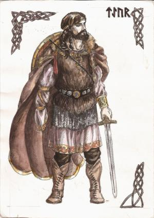

Valhalla
deuses
mitos
runas
jogos
localização
contato
DEUSES

ODIN
Odin ou Ódin (em nórdico antigo: Óðinn; em germânico comum: Wōdanaz) é considerado o deus principal do clã dos deuses Æsir, o clã mais importante de ......
THOR
Thor (filho de Odin e Frigga) foi o deus nórdico do trovão (por isto representava a força da natureza), talvez o mais popular deus da mitologia nórdica. Ele tinha um martelo chamado ......

LOKI
Na Mitologia Nórdica, Loki é um deus, ou um jotun (gigantes que se opõem aos deuses), filho de Farbanti e Laufey, irmão de Helblindi e Býleistr. É o deus do fogo, da trapaça e da travessura, está também relacionado à magia, podendo .......

FREYA
Freya é a Deusa Mãe da dinastia de Vanir na mitologia nórdica. Filha de Njord e Skade (Skadi), o deus do mar, e irmã de Frey, ela é a deusa do sexo e da sensualidade, fertilidade, do amor da beleza e da atração, da ......

TYR
Týr é o deus da guerra, ele pertence ao clã dos deuses Aesir. Ele é filho de Hymir e Hroðr (Hrodr), ambos jötnar. Týr não tem a mão direita, pois ela foi devorada por Fenrir, enquanto os deuses o ......